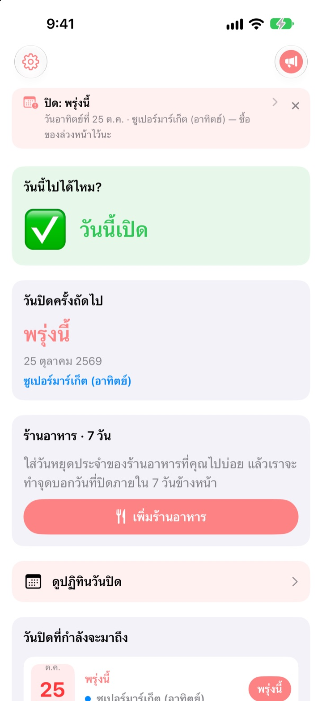
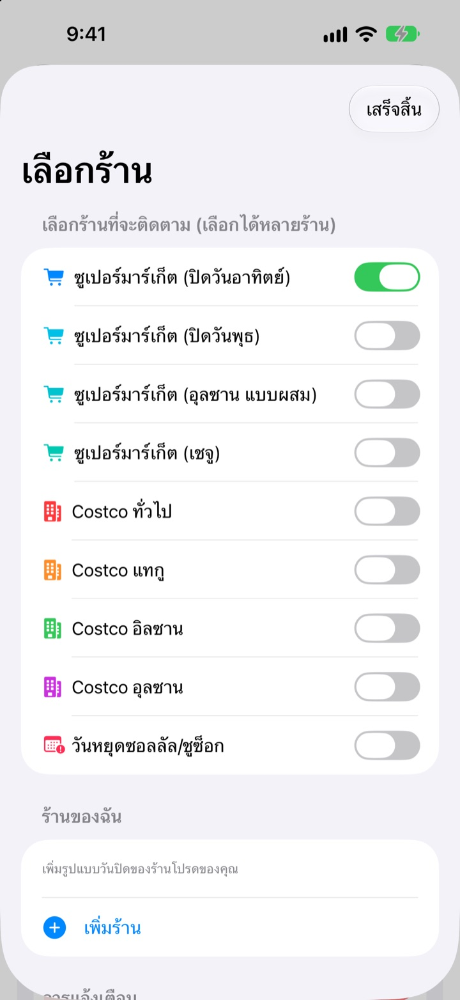
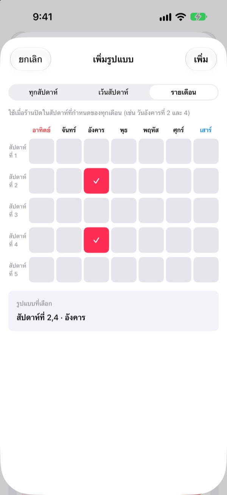
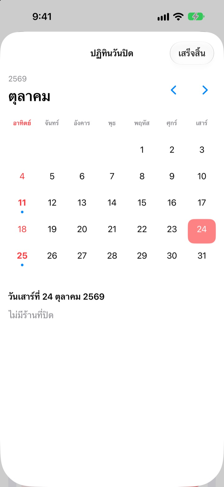
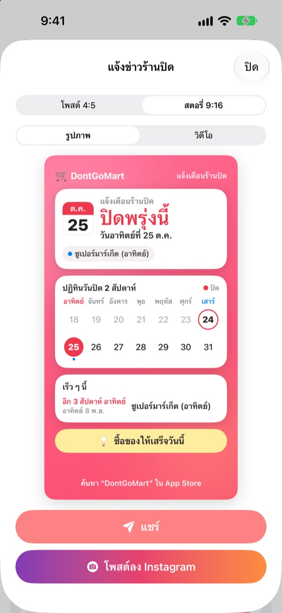

ก่อนออกไปซื้อของ
เช็กก่อนว่าวันนี้เปิดไหม
เปิดแอปปุ๊บ สิ่งแรกที่เห็นคือร้านที่เลือกไว้เปิดวันนี้หรือเปล่า และจะแจ้งเตือนล่วงหน้าก่อนวันหยุดทุกครั้ง ไม่ต้องไปเจอประตูปิดอีก
ทุกฟีเจอร์ใช้ฟรี ไม่ต้องมีบัญชี ไม่มีโฆษณา

ลองกับร้านของคุณ
เลือกร้านแล้วดูได้ทันทีว่าวันนี้เปิดไหม และวันหยุดถัดไปคือวันไหน คำนวณด้วยกฎเดียวกับในแอป
เคยถือรายการซื้อของไปแล้วเจอร้านปิดไหม
ไฮเปอร์มาร์เก็ตในเกาหลีต้องหยุดเดือนละ 2 วัน แต่เป็นวันไหนขึ้นอยู่กับพื้นที่ ส่วนใหญ่คือวันอาทิตย์ที่ 2 และ 4 บางแห่งเป็นวันพุธ ส่วนอุลซานและเชจูก็มีกฎของตัวเอง Costco ก็ต่างกันไปตามสาขา DontGoMart คำนวณวันหยุดตามกฎของร้านที่คุณไป แล้วบอกก่อนเลยว่าวันนี้ไปได้ไหม
ถูกต้องในทุกพื้นที่
เลือกร้านที่หยุดวันอาทิตย์หรือวันพุธ หรือพื้นที่ที่มีตารางของตัวเองอย่างอุลซานและเชจู Costco สาขาทั่วไปกับสาขาแทกู อิลซาน และอุลซานตั้งค่าแยกกันได้
วันหยุดในวันซอลลัลและชูซ็อกก็แสดงด้วย และติดตามหลายร้านพร้อมกันได้

ร้านใกล้บ้านและร้านอาหารประจำ
ร้านที่ไม่มีในรายการ เพิ่มเองได้ ทั้งแบบทุกสัปดาห์ เว้นสัปดาห์ หรือสัปดาห์ที่เท่าไรของเดือนวันอะไร
สำหรับร้านอาหาร แค่วางลิงก์ที่แชร์จาก Naver Map หรือเลือกภาพหน้าจอข้อมูลร้าน วันหยุดประจำจะถูกกรอกให้เอง ข้อความในภาพอ่านบนอุปกรณ์เท่านั้น

แจ้งเตือนและวิดเจ็ตกันลืม
เลือกให้แจ้งก่อน 1, 2, 3 หรือ 7 วันตามเวลาที่ต้องการ และวันก่อนวันหยุดจะเตือนอีกครั้งว่าวันนี้เหมาะกับการไปซื้อของ
วิดเจ็ตบนหน้าจอโฮมและหน้าจอล็อกแสดงวันหยุดที่ใกล้ที่สุด วันอาทิตย์นี้เปิดไหม และวันหยุดของร้านอาหาร 7 วันข้างหน้า ปฏิทินแสดงวันหยุดทั้งเดือน

แชร์ด้วยการ์ดใบเดียว
ทำข่าววันหยุดเป็นการ์ดที่มีปฏิทิน 2 สัปดาห์และเคล็ดลับการซื้อของ แล้วส่งเข้ากลุ่มครอบครัว มีขนาดโพสต์และสตอรี่ Instagram และวิดีโอสั้นด้วย

เริ่มได้ใน 3 ขั้นตอน
- 1
เลือกร้าน
เปิดร้านและพื้นที่ที่คุณไปซื้อของ เลือกได้หลายร้าน
- 2
เปิดการแจ้งเตือน
เลือกว่าจะให้เตือนก่อนกี่วันและกี่โมง
- 3
วางวิดเจ็ต
ดูได้จากหน้าจอโฮมหรือหน้าจอล็อกโดยไม่ต้องเปิดแอป
กฎวันหยุดของแต่ละร้าน
- ซูเปอร์มาร์เก็ต (ปิดวันอาทิตย์)
- อาทิตย์ที่ 2 และ 4 · เกือบทุกพื้นที่
- ซูเปอร์มาร์เก็ต (ปิดวันพุธ)
- พุธที่ 2 และ 4 · บางส่วนของคย็องกี ชองจู
- ซูเปอร์มาร์เก็ต (อุลซาน)
- พุธที่ 2 อาทิตย์ที่ 4
- ซูเปอร์มาร์เก็ต (เชจู)
- ศุกร์ที่ 2 เสาร์ที่ 4
- Costco ทั่วไป
- อาทิตย์ที่ 2 และ 4
- Costco แทกู
- จันทร์ที่ 2 และ 4 · แทกู แทกูฮย็อกชิน
- Costco อิลซาน
- พุธที่ 2 และ 4
- Costco อุลซาน
- พุธที่ 2 อาทิตย์ที่ 4
- ซอลลัล ชูซ็อก
- หยุดในวันนั้น
วันหยุดบังคับกำหนดโดยหน่วยงานท้องถิ่นและอาจเปลี่ยนได้ หากไม่ตรงกับความจริง แจ้งเราทางอีเมลด้านล่าง
คำถามที่พบบ่อย
วันหยุดไม่ตรงกับความจริง
วันหยุดบังคับของไฮเปอร์มาร์เก็ตเป็นไปตามข้อบัญญัติท้องถิ่นและต่างกันในแต่ละพื้นที่ โปรดตรวจสอบในการตั้งค่าว่าเลือกประเภทร้านถูกต้อง (หยุดวันอาทิตย์ หยุดวันพุธ อุลซาน เชจู ฯลฯ) ถ้ายังไม่ตรง ส่งชื่อร้านและพื้นที่มาทางอีเมล เราจะตรวจสอบให้
ร้านของฉันไม่มีในรายการ
เพิ่มเป็นร้านของคุณเองได้ เลือกแบบทุกสัปดาห์ เว้นสัปดาห์ หรือสัปดาห์ที่เท่าไรของเดือนวันอะไร เช่น อาทิตย์ที่ 2 และ 4 แล้วบันทึก
วันหยุดของร้านอาหารกรอกไม่ถูก
เมื่อนำเข้าจากลิงก์ Naver Map หน้าข้อมูลร้านต้องระบุวันหยุดประจำไว้ เมื่อใช้ภาพหน้าจอ ให้ถ่ายให้เห็นข้อความเรื่องวันหยุดบนหน้าจอ แก้ไขข้อมูลได้ก่อนบันทึก
ไม่ได้รับการแจ้งเตือน
ตรวจสอบว่าอนุญาตการแจ้งเตือนใน การตั้งค่า > การแจ้งเตือน > DontGoMart และเปิดการแจ้งเตือนวันหยุดในแอปแล้ว
วิดเจ็ตไม่อัปเดต
เปิดแอปหนึ่งครั้งแล้ววิดเจ็ตจะรีเฟรช ถ้ายังไม่เปลี่ยน ให้ลบวิดเจ็ตแล้วเพิ่มใหม่
ทิปคืออะไร
ทุกฟีเจอร์ของ DontGoMart ใช้ฟรี ทิปกาแฟ เค้ก และอาหารเป็นการสนับสนุนนักพัฒนา หลังให้ทิปจะเห็นคำขอบคุณและป้ายผู้สนับสนุนพร้อมจำนวนครั้ง
สอบถามเรื่องการชำระเงินหรือขอคืนเงินที่ไหน
Apple เป็นผู้ดูแลการซื้อภายในแอป ขอคืนเงินได้ที่ reportaproblem.apple.com เรื่องอื่น ๆ ส่งอีเมลหาเราได้
ข้อมูลของฉันถูกจัดการอย่างไร
ไม่มีบัญชี ไม่มีโฆษณาหรือเครื่องมือติดตาม และข้อความในภาพหน้าจออ่านบนอุปกรณ์เท่านั้น ดูรายละเอียดในนโยบายความเป็นส่วนตัวด้านล่าง
มีคำถามหรือไอเดีย ส่งมาที่ hyunho.lee.1993@gmail.com ปกติเราตอบภายใน 1–2 วัน